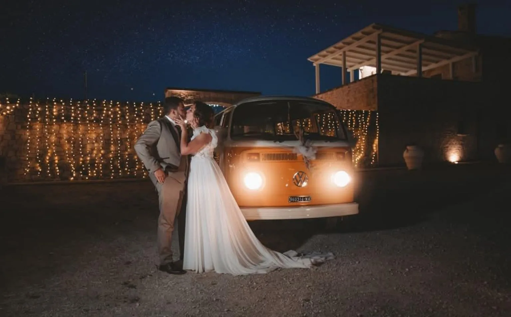

CHAUFFEUR-DRIVEN WEDDING CAR · PUGLIA, ITALY
Something old. Something yellow.
A yellow 1974 Volkswagen makes quite a wedding car. On the way to your ceremony in Puglia, have the back seat to yourselves or bring the people who always make you laugh.
Check availability Tell us your date and venue. We’ll take it from there.MEET YOUR WEDDING RIDE
Made in 1974.
Still making an entrance.
Round headlights, a sliding door and a colour you can spot across a courtyard. Our 1974 Volkswagen T2 looks right at home among Puglia’s olive trees, especially with the two of you in the picture.

Just the two of you?
There’s room for company.
Perhaps it’s your best friend you want beside you, or the bridesmaids who helped you get ready. The VW seats eight passengers, including the two of you, and your chauffeur has a separate seat.
ONE LESS THING ON YOUR LIST
Big day.
Small details, sorted.
Before the wedding, we’ll work out where to meet, when to set off and where to stop for photos. On the day, you can enjoy the view and the company.
 01 / 03
01 / 03Your plans.
Our part in them.
Tell us where you’re getting married and what time you need to be there. We’ll plan the route and the finishing touches with you, and speak to your wedding planner if you have one.
ROUTE, TIMINGS AND PRICE AGREED IN ADVANCESave the driving
for another day.
Take a quiet moment together or invite a few familiar faces along for the ride. There are eight passenger seats altogether, including yours, plus a seat for your chauffeur.
UP TO EIGHT PASSENGERS, PLUS YOUR CHAUFFEURYes, we can stop
for that photograph.
An olive grove, a masseria courtyard or a shot beside the VW. We’ll allow time for photo stops in your itinerary and coordinate them with your photographer.
PHOTO STOPS INCLUDED IN THE AGREED ITINERARYSomeone else at the wheel
Your chauffeur and fuel for the agreed route are included.
Dressed for your day
Tell us your wedding colours and we’ll work out how to dress the VW to match.
Time for the photographs
Photo stops are planned into the day with you and your photographer.
OUR VW, OUT AND ABOUT
Good company.
Great in the wedding album.
THE WEDDING’S IN PUGLIA
You picked Puglia.
We can see why.
A ceremony in Conversano, a reception in a masseria courtyard and a stop for photos along the way. From the Itria Valley to the coast, we’ll plan your route around the places that matter to you.
WHERE’S THE WEDDING?Somewhere else in mind? Add it to the enquiry.

LET’S LOOK IN THE DIARY
Got a date?
Let’s check the bus.
Tell us your wedding date and venue. We’ll check whether the VW is free and send you a quote. A rough idea of the day is plenty to get started.
You’ll hear from us directly.
Your message
is ready to go.
Happy with the details? Open WhatsApp to send us your enquiry. You can also edit the message there before sending.
Open WhatsAppWe’ll reply with availability and a quote.
Your booking is confirmed separately.
BEFORE YOU BOOK
Good to know.
What does the quote include?
The VW with a chauffeur, fuel for the agreed route, the decoration we’ve arranged with you and the photo stops in your itinerary. Any extras will be listed in the quote. Permits for restricted-traffic areas, where needed, are an additional cost payable by the client.
Who can ride in the VW with us?
You can have the VW to yourselves or invite family, friends, bridesmaids or witnesses to ride with you. It seats up to eight passengers in all, including the two of you. Your chauffeur has a separate seat.
How do we reserve the bus?
Send us your date, venue and the route you have in mind. We’ll check availability and send a quote. To confirm, we put the itinerary, timings, price, deposit and booking terms in writing. Sending an enquiry doesn’t reserve the date.
We’re planning from abroad. How does that work?
You can write to us in English, Italian or French. If you have a wedding planner, put us in touch. We’ll agree where to meet, the route and the timings before you arrive in Puglia.
Can we choose the decoration?
Of course. Send us your wedding colours or a few reference pictures and we’ll agree the details for the bus. Any special requests and additional costs are discussed before you confirm.
You bring the confetti.
We’ll bring the yellow VW.